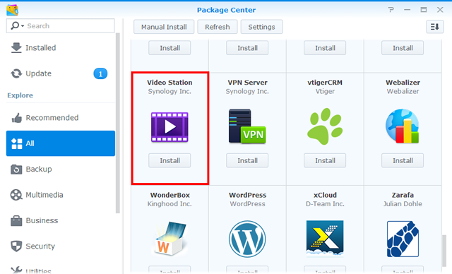

Przegląd
Za pomocą aplikacji Video Station można z łatwością porządkować i dzielić na kategorie kolekcję filmów wideo w kilku domyślnych lub dostosowanych bibliotekach, aby można było szybciej znaleźć poszukiwany plik wideo. Ponadto, za pomocą kilku kliknięć można łatwo i szybko odtwarzać i udostępniać filmy wideo.
1. Instalowanie pakietu Video Station
Aby zainstalować pakiet Video Station, przejdź do pozycji Centrum pakietów, odszukaj pakiet Video Station, a następnie kliknij przycisk Zainstaluj.
2. Zapisywanie i dzielenie plików wideo na kategorie w domyślnych bibliotekach
Aplikacja Video Station oferuje trzy domyślne biblioteki, które pokazano na panelu po lewej stronie: Film, Program TV i Wideo domowe. Aby upewnić się, że filmy wideo mogą być prawidłowo zindeksowane i podzielone na kategorie, należy dodać foldery wideo do każdej biblioteki, a następnie zapisać swoje pliki w odpowiednich folderach wideo. Domyślnie w folderze współdzielonym video utworzono trzy foldery wideo, dla trzech domyślnych kategorii: Film, Program TV i Wideo domowe. Jednak oprócz tych trzech folderów można również dodać więcej folderów do biblioteki, wykonując poniższe czynności.
System automatycznie wyszuka w sieci Internet powiązane metadane i inne informacje (np. plakat) dla dwóch typów filmów wideo (filmy i programy TV). Dlatego aby zagwarantować, że filmy wideo zostaną powiązane z prawidłowymi informacjami, zalecamy, aby filmy wideo odpowiadały określonemu typowi filmu wideo z odpowiedniej biblioteki.
Dodawanie folderów wideo do domyślnych bibliotek
- Przejdź do pozycji Ustawienia > Biblioteka.
- Kliknij pozycję Utwórz > Dodaj folder, aby wybrać folder z serwera NAS Synology, a następnie wybierz bibliotekę docelową. Do jednej biblioteki można dodać do 100 folderów wideo, ale po wybraniu folderu, nie można go, ani jego podfolderów wybrać do innej biblioteki.
- Zapisz pliki wideo w folderach wideo, aby podzielić pliki wideo na kategorie w odpowiednich bibliotekach.
- Teraz można przeglądać i oglądać żądane pliki wideo w bibliotekach!


3. Zapisywanie i dzielenie plików wideo na kategorie w niestandardowych bibliotekach
Oprócz trzech domyślnych bibliotek, do których domyślnie może uzyskać dostęp każdy użytkownik, użytkownik admin lub użytkownicy należący do grupy administrators systemu DSM mogą też tworzyć biblioteki niestandardowe i przypisywać prawa dostępu innym użytkownikom.
3.1 Tworzenie bibliotek niestandardowych
- Przejdź do pozycji Ustawienia > Biblioteka i kliknij pozycję Utwórz > Utwórz bibliotekę.
- Określ nazwę nowej biblioteki, wybierz typ plików wideo, które chcesz umieścić w folderze, a następnie wybierz Publiczny, aby dostęp do biblioteki mogli uzyskać wszyscy, lub Prywatny, aby ograniczyć dostęp do określonych użytkowników posiadających uprawnienia. Należy pamiętać, aby film wideo umieszczany w folderze odpowiadał wybranemu typowi, aby zagwarantować dokładność informacji pobranych z sieci Internet.
- W przypadku wybrania opcji Prywatny, kliknij przycisk Przypisz uprawnienia i zaznacz pola wyboru, aby przyznać uprawnienia użytkownikom.

3.2 Dodawanie folderów wideo do bibliotek niestandardowych
- Przejdź do pozycji Ustawienia > Biblioteka.
- Kliknij pozycję Utwórz > Dodaj folder, aby wybrać folder z serwera NAS Synology, a następnie wybierz bibliotekę docelową. Do jednej biblioteki można dodać do 100 folderów wideo, ale po wybraniu folderu, nie można go, ani jego podfolderów wybrać do innej biblioteki.
- Zapisz pliki wideo w folderach wideo, aby podzielić pliki wideo na kategorie w odpowiednich bibliotekach.
- Teraz można przeglądać i oglądać żądane pliki wideo w bibliotekach!
4. Odtwarzanie wideo
Po podziale plików wideo na kategorie w różnych bibliotekach, można wykonać poniższe kroki, aby otworzyć pliki wideo w aplikacji Video Station. Zaleca się wcześniejsze zainstalowanie na komputerze odtwarzacza multimedialnego VLC (Windows, Linux). Oprócz odtwarzania wideo na komputerze lokalnym można też przesyłać strumieniowo pliki wideo do urządzeń DMA kompatybilnych ze standardem DLNA/UPnP lub urządzeń kompatybilnych z technologią AirPlay.
Odtwarzanie wideo przy użyciu wbudowanego Odtwarzacza wideo
- Wybierz klip wideo, który chcesz odtworzyć, a następnie kliknij ikonę odtwarzania na miniaturze wideo lub kliknij Akcja > Odtwórz.
- Odtwarzanie pliku powinno rozpocząć się od razu. W przeciwnym wypadku sprawdź, czy format pliku wideo jest obsługiwany przez przeglądarkę internetową lub czy na komputerze zainstalowana jest wtyczka VLC.
- Użyj przycisków na ekranie oraz paska postępu w dolnej części Odtwarzacza wideo stosownie do potrzeb. Można również dostosować głośność, wybrać jakość odtwarzania wideo i ścieżkę dźwiękową, włączyć napisy lub przesłać strumieniowo wideo do innego urządzenia (jeśli ma to zastosowanie).


Szczegółowe informacje na temat wtyczki VLC i obsługiwanych urządzeń można znaleźć w pozycji Pomoc DSM > Video Station > Odtwarzanie wideo.
5. Publiczne udostępnianie plików wideo
Za pomocą funkcji udostępniania publicznego można z łatwością udostępniać pliki wideo innym osobą używającym aplikacji Video Station. Wszystkie udostępnione pliki wideo są publicznie dostępne dla każdej osoby mającej łącze i można nimi zarządzań na stronie Kolekcja.
Udostępnianie plików wideo innym osobom
- Przejdź do dowolnej biblioteki i kliknij Wszystkie w prawym górnym rogu, aby wyświetlić wszystkie filmy wideo w danej bibliotece.
- Kliknij ikonę Wybierz tryb lub naciśnij i przytrzymaj klawisz Ctrl lub Shift, aby wybrać wiele filmów wideo. Następnie kliknij Akcja > Udostępnij publicznie.
- Jeśli wybrano tylko jeden plik wideo do udostępnienia, plik wideo zostanie dodany do udostępnionej kolekcji o nazwie Udostępnione wideo. Można tam zarządzać wszystkimi plikami, które zostały udostępnione pojedynczo.
- Jeśli wybrano wiele plików wideo do udostępnienia, zostaną one umieszczone w nowej udostępnionej kolekcji.
- Ewentualnie można również kliknąć pozycję Akcja > Kolekcja, aby dodać wybrane pliki wideo do istniejącej udostępnionej kolekcji (jeśli ma to zastosowanie).
- Określanie okresu ważności, gdy jest to konieczne.
- Po prostu skopiuj i wklej łącze w wiadomości e-mail, komunikatorze i na stronach internetowych, aby udostępnić wszystkim pliki wideo.

6. Organizowanie i oglądanie plików wideo na urządzeniach mobilnych
Aby łączyć się z Video Station przy użyciu urządzeń mobilnych, można pobrać aplikację DS video do urządzeń z systemami iOS/Android lub Windows Phone korzystając z poniższych kodów QR, aby odtwarzać pliki wideo i organizować kolekcje na urządzeniach mobilnych oraz przesyłać strumieniowo wideo do urządzeń DMA lub AirPlay w domu i w drodze.